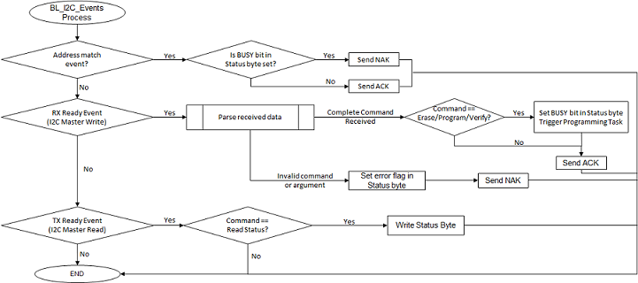

Bootloader Execution Flow
- The Bootloader code starts executing on a device Reset
- The Bootloader calls the bootloader_Trigger routine. If the bootloader_Trigger routine returns true, it enters the firmware upgrade mode, otherwise the Bootloader checks if a valid application (first 4 bytes of application are not equal to 0xFFFFFFFF) is programmed. If a valid application is found it starts running the application.
- The Bootloader performs Flash erase/program operations while in the firmware upgrade mode

Firmware Upgrade Mode Execution Flow:
There are two state machines. One state machine processes the I2C events, parses the recevied I2C packets and triggers flash operations. The second state machine performs the flash operations (read/write/verify).
Bootloader I2C Events Processor Task Flow
- Bootloader I2C Events Processor Task polls and processes the I2C events.
- This task is responsible for parsing and responding to the bootloader commands
- Once complete packet is received it sets the BUSY flag in the status byte and also sets appropriate flags for the Flash Programming Task to execute the command (Erase/Program/Verify)

Flash Programming Task Flow
- This task is responsible for executing the Erase/Program and Verify commands
- This task is non-blocking. It submits a Erase/Program request and then checks the status of flash operation whenever it gets a chance to run
- Once the flash operation is complete, it clears the BUSY flag and sets appropriate error flags (if any) in the status byte.

|
MPLAB Harmony Bootloader Help
|